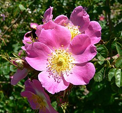
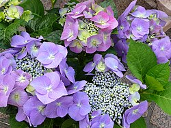
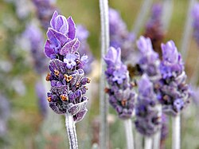
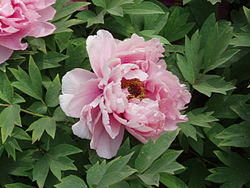

| Type | Image | Trailer | Description | Audio | Details | Links | Smells |
|---|---|---|---|---|---|---|---|
| Rose |  | Their stems are usually prickly and their glossy, green leaves have toothed edges. | Roses, belonging to the genus Rosa within the Rosaceae family, are woody perennial flowering plants known for their beauty, fragrance, and diverse colors, ranging from white to vibrant shades of red, pink, yellow, and orange. | View Source | A sweet, floral, and slightly spicy fragrance, with undertones of green, fruity, and powdery notes, making it a rich, complex, and distinctive aroma. | ||
| Hydrangea |  | Hydrangeas are unique because they have super sticky pollen. | Hydrangeas are a genus of flowering plants, typically shrubs, known for their large, showy blooms and the ability of some varieties to change color based on soil pH. They come in various forms, including mophead and lacecap, and are popular for their vibrant colors and long-lasting blooms. | View Source | While many hydrangea varieties are known for their beauty, not all of them are fragrant, but some, particularly the "Hydrangea paniculata" and American varieties like the oakleaf hydrangea, are known for their sweet, floral, and sometimes honey-vanilla scent. | ||
| Lavender |  | Lavender contains an oil that seems to have calming effects and might relax certain muscles. | Lavender (Lavandula angustifolia) is a fragrant, evergreen shrub native to the Mediterranean region, known for its calming properties and uses in aromatherapy, medicine, and cosmetics. | View Source | Lavender has a distinctive, calming scent that is often described as fresh, floral, slightly sweet, and herbaceous, with undertones of calm and relaxation. | ||
| Peony |  | The herbaceous peonies are perennials that grow to a height of almost 1 metre (about 3 feet). | Peonies (genus Paeonia) are a group of flowering plants known for their large, showy blooms and are either herbaceous (die back in winter) or woody (tree peonies). They come in a wide range of colors, including pink, red, white, and yellow, and are popular for their fragrance and ornamental value. | View Source | Peonies possess a delicate, soft, and slightly sweet floral fragrance, often described as a blend of rose and lily of the valley, with a hint of citrus or spice depending on the variety. |